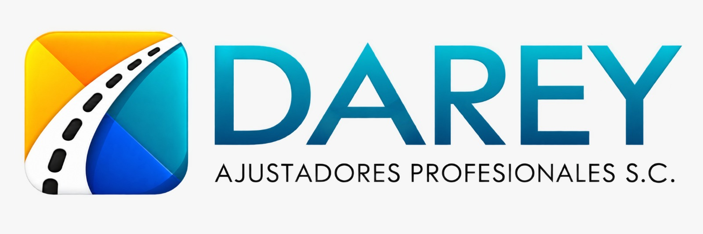

Arribo oportuno
Reducimos tiempos de respuesta porque sabemos que cada minuto cambia la percepción del asegurado.

Ajustadores profesionales · San Luis Potosí
Acompañamos cada siniestro con experiencia, claridad y atención cercana, cuidando la imagen de nuestros socios comerciales.
Quiénes somos
DAREY es una empresa con más de seis años en el mercado asegurador, respaldada por 35 años de experiencia ofreciendo soluciones al sector.
Conocemos las necesidades de compañías y asegurados. Por eso, cada intervención combina atención profesional, comunicación clara y respeto por la imagen de nuestros socios.
Reducimos tiempos de respuesta porque sabemos que cada minuto cambia la percepción del asegurado.
Un equipo técnicamente capaz, con alto enfoque al cliente y atención verdaderamente humana.
Documentamos cada caso con fotografías, evidencias y conclusiones claras para la compañía.
Nuestro proceso
Recibimos el reporte, validamos la información y contactamos al asegurado.
Arribamos al lugar, identificamos unidades y damos acompañamiento ante la autoridad.
Recabamos declaraciones, fotografías, documentos y evidencias necesarias.
Integramos el cuadernillo y presentamos conclusiones a la compañía de seguros.
Cobertura regional
Una red preparada para atender siniestros en la región y responder a necesidades específicas de nuestros socios comerciales.
Capital, sus 58 municipios y colindancias estratégicas.
Los 11 municipios y zonas limítrofes de Zacatecas y Jalisco.
La Paz, Los Cabos, Todos Santos, Constitución y Loreto.
Presencia operativa en Colima, Tepic y atención nacional mediante nuestra red.
Experiencia compartida
DAREY ha colaborado con organizaciones como Más Soluciones, Seguros Afirme, Movilidad de Transporte Urbano y Colectivo Potosino, Grupo Zeus, Seguros El Águila y General de Seguros.